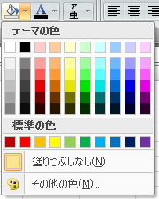
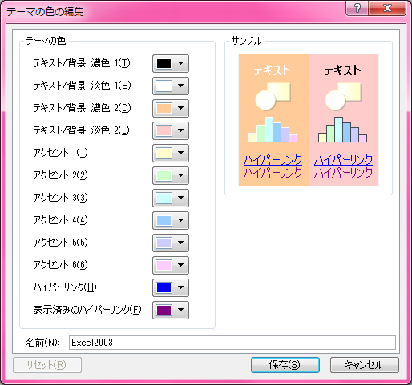

Excel 2007 以降で Excel 2003 以前っぽい淡い配色を使いやすくするには
表題のとおり。

こんな感じの配色をカラーパレットに置くまでの手順。Excel 2007・Excel 2010 で試した。
配色を作る
「ページ レイアウト」リボンメニュー → 「配色」 → 「新しい配色パターンの作成」に進む。

上の画像のように、薄い7色を以下のように設定する。
| テーマの色 | 選択する色 |
|---|---|
| テキスト/背景: 濃色 2 | オレンジ |
| テキスト/背景: 淡色 2 | 赤 |
| アクセント 1 | 黄色 |
| アクセント 2 | 黄緑 |
| アクセント 3 | 水色 |
| アクセント 4 | 薄青 |
| アクセント 5 | 薄紫 |
| アクセント 6 | ピンク |
- 選択する薄い色は、「色の設定」の「標準」タブに表示されるハニカムの集合体みたいな所から、中央に近い所から選ぶ。画像を見ながら適当に選んでください。
- ポイントは「赤」と「オレンジ」を、ココでの並び順としては逆にすること (赤→オレンジ、と並べたいが、オレンジ→赤、とする)。
配色を指定したブックをテンプレートにする
新規ブックを開き、作成した配色を選択したら、「名前を付けて保存」ダイアログを開き、「ファイルの種類」より「Excel テンプレート」を選択する。
保存先フォルダを %ProgramFiles%\Microsoft Office\Office14\XLSTART\ にし、Book.xltx という名前で保存する。
Excel を一度閉じ、再度開くと、先ほど保存したテンプレートブックの状態で新規ブックが開かれるので、カラーパレットが淡い配色になった状態で、新規ブックを作れる。